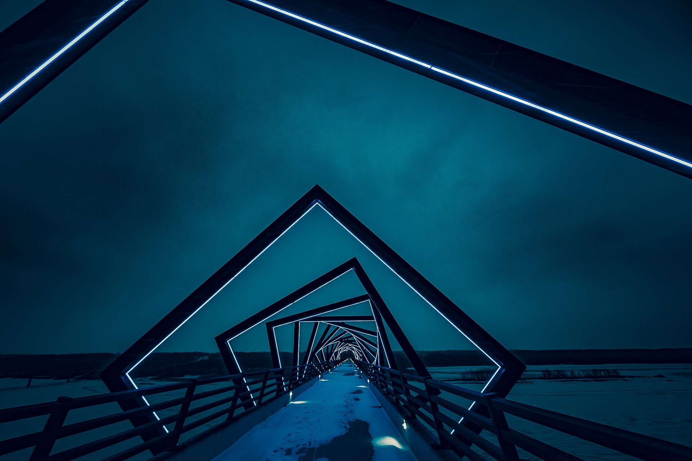

Sensorización estructural y ambiental
Captura vibración, desplazamiento, inclinación, temperatura, humedad, gases, partículas, presión y cualquier variable crítica del activo.
Qartia diseña, desarrolla e integra sistemas IoT, comunicaciones inalámbricas, analítica avanzada y modelos de Inteligencia Artificial para conocer en tiempo real el estado de infraestructuras civiles críticas.
La solución permite capturar variables estructurales, ambientales y operativas, enviarlas de forma segura a plataforma y convertirlas en cuadros de mando, umbrales de riesgo y alertas accionables para operadores y responsables técnicos.
Esta línea es especialmente relevante para túneles, puentes, viaductos, carreteras, presas, hospitales, edificios singulares e infraestructuras hidráulicas donde la continuidad del servicio y la seguridad dependen de una supervisión continua.
Con Qartia, la infraestructura deja de gestionarse sólo por inspección puntual y pasa a funcionar como un activo monitorizado, trazable y preparado para mantenimiento predictivo.
Qartia integra sensórica, adquisición de datos, comunicaciones, alimentación, visualización e inteligencia para convertir el activo físico en un sistema operativo monitorizado.
El cliente obtiene como resultado una infraestructura monitorizada en continuo, con capacidad de contextualizar eventos y escalar el despliegue sin rehacer la arquitectura.


La plataforma se apoya en adquisición de campo, red IoT, backhaul seguro, nube Qartia y modelos inteligentes para transformar medición técnica en operación preventiva.
La arquitectura es escalable: Está concebida para integrarse con infraestructura ya existente y crecer por módulos según cobertura, criticidad y objetivos del cliente.


Captura vibración, desplazamiento, inclinación, temperatura, humedad, gases, partículas, presión y cualquier variable crítica del activo.
Arquitecturas híbridas con LoRa, 5G, MQTT y VPN segura para desplegar en túneles, entornos remotos y redes complejas.
Cuadros de mando para operadores y clientes con visión operativa, alarmas, históricos y trazabilidad de eventos.
Representación visual del activo para contextualizar sensores, zonas críticas, estados y mantenimientos.
Modelos para detectar anomalías, anticipar degradación y estimar desgaste antes de que aparezca el fallo.
Generación de avisos automáticos para operadores, explotadores, clientes y servicios de emergencia.
Capacidad abierta para conectar con SCADA, BMS, GIS, sistemas corporativos o centros de control existentes.
Seguimiento del estado de la electrónica de campo y planificación de mantenimiento basada en condición real.

Identifica desviaciones antes de que evolucionen a incidencias de seguridad o servicio.
Permite actuar con datos y priorizar inspecciones o cierres de forma mejor fundamentada.

Aporta visibilidad adicional frente a episodios climáticos, sísmicos o de degradación acelerada.
Organiza intervenciones por condición real del activo y no solo por calendario fijo.

Ofrece una vista unificada para operadores, responsables técnicos y explotadores.
Facilita disparar protocolos y compartir información relevante con rapidez.

Monitorización configurable para captar variables críticas, enviar datos en tiempo real y generar alertas accionables.

Seguimiento continuo del comportamiento estructural y de la evolución del activo en servicio.

Control de zonas críticas con arquitectura abierta y visualización operativa centralizada.

Supervisión de variables estructurales, ambientales y de explotación con trazabilidad continua.

Seguimiento de puntos sensibles, nodos viarios y entornos donde la seguridad exige respuesta temprana.

Monitorización adaptada a infraestructuras con alta criticidad, ocupación o valor patrimonial.

Control de activos e infraestructuras donde la continuidad del servicio es crítica.

Despliegues configurables para conducciones, drenajes y elementos civiles vinculados al agua.
Selección del activo, criticidad, variables a medir, necesidades de cobertura y KPIs operativos.
Instalación de sensores, electrónica, alimentación y comunicaciones sobre la infraestructura real.
Configuración de visualización, eventos, umbrales, analítica y protocolos de notificación.
Informe de impacto, ampliación del sistema y operación basada en condición real del activo.
Qartia puede preparar estudios técnicos, pilotos y despliegues de campo para validar sensorización, conectividad, analítica y alertas sobre infraestructuras civiles críticas.